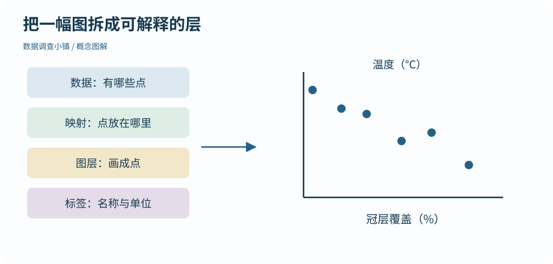
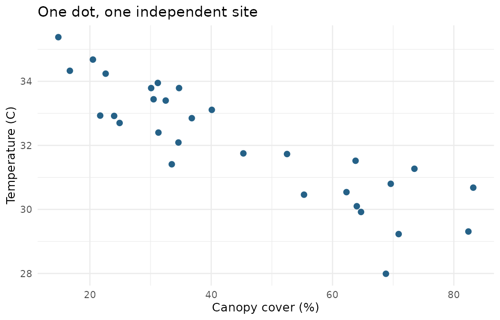

第 19 节 · 图形广场
一幅图怎样搭起来
点的位置和颜色，哪些来自数据？
理解 ggplot 的数据、映射与图层，区分映射和固定设置。
本节目录
运行位置：打开练习包内的 r-lab.Rproj，在项目根目录运行本节脚本。安装与准备见第 02—04 节；第 13 节说明扩展包。
先规定一粒点代表什么
这次使用 30 个独立地点的横断面模拟数据。每个地点只贡献一个点：横轴是冠层覆盖率，纵轴是温度。它与前三处地点的重复观察是不同资料，不能混在一起当作相同的样本设计。
ggplot2把图形组织为几个部分：数据、映射、几何图层，以及坐标、刻度等。图形语法把“画什么”拆成能解释的选择，让同一套思路可以用于多种图形。
图解 · 把一幅图拆成可解释的层

数据规定有哪些记录，映射决定位置，点图层决定画成点，标签和单位让图可以独立阅读。
放大查看 ↗ 保存 SVG ↓# 数据调查小镇 · 第 19 节
# 在 r-lab 项目根目录运行；输出只写入 results。
suppressPackageStartupMessages(library(ggplot2))
parks <- read.csv("data/independent_sites.csv")
p <- ggplot(parks, aes(x = canopy_pct, y = temperature_c)) +
geom_point(colour = "#256187", size = 2.5) +
labs(x = "Canopy cover (%)", y = "Temperature (C)", title = "One dot, one independent site") +
theme_minimal(base_size = 13)
dir.create("results", showWarnings = FALSE)
ggsave("results/19-mapping.png", plot = p, width = 7.5, height = 4.8, dpi = 140)
print(nrow(parks))[1] 30
R 实际生成 · 冠层覆盖与温度

一点代表一个独立模拟地点。横轴是冠层覆盖百分比，纵轴是摄氏温度；本图只展示关联。
放大查看 ↗ · 下载图片 ↓aes() 把变量对应到可见属性
aes(x = canopy_pct, y = temperature_c) 让每条记录的两列数决定位置。geom_point() 添加散点图层。这里设置 colour = "#256187" 写在 aes 外面，表示所有点都用同一种颜色。
如果写 aes(colour = material)，则把材料类别映射为颜色，通常还会产生图例。把 aes(colour = "blue") 当成“所有点用蓝色”是常见误会：aes 会把这段文字当作映射中的类别值。
为什么图层用加号
ggplot 对象通过 + 添加图层与设置；数据整理流程用 |> 传递结果。两种连接分别服务于不同接口。先把整理结果存成一个对象，再用 ggplot 画图，通常比初学时把所有操作挤成一行更容易检查。
轴标题写出名称与单位。图中保留和代码一致的英文变量意义，正文提供中文解释；读图时始终明确横轴百分比、纵轴摄氏温度，避免把数字范围当成单位本身。
先看原始点，再谈模型
当前图只展示数据关系，没有自动证明因果，也没有完成检验。注意是否有明显弯曲、离群点或覆盖范围不足。在第 31 节添加回归线前，先熟悉这些点如何排列，是很重要的准备。
动手试试
固定颜色与映射颜色
想让所有点都呈同一种绿色，colour 应该放进 aes() 还是写在 geom_point() 的 aes 外？
给我一点提示
问自己：颜色是否取决于数据列？
查看参考解法与解释
写在 aes 外，例如 geom_point(colour = "#36866f")。若颜色要由某列类别决定，才在 aes 中映射该列。
带走这一点
一张图可以拆成数据、变量映射和图层，映射到变量与固定外观是两件事。下一节根据问题挑选图形，看清温度怎样分布，以及不同地点有哪些差异。
检查一下理解
aes(x = canopy_pct) 表示什么？
查看解释
映射控制每条记录的位置；标题由 labs() 等设置处理。